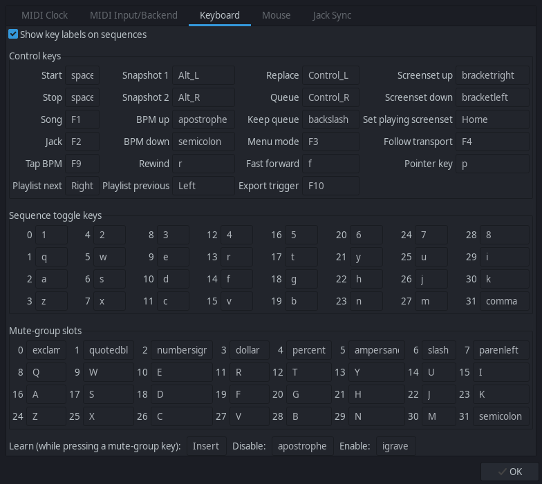
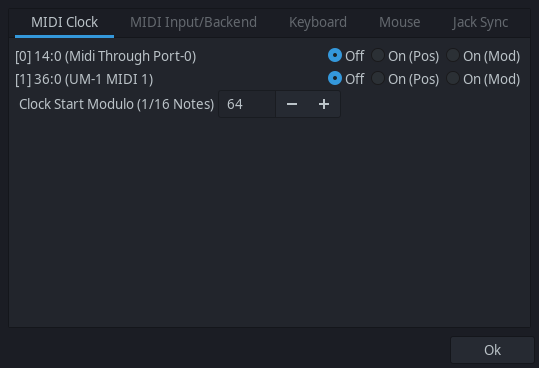
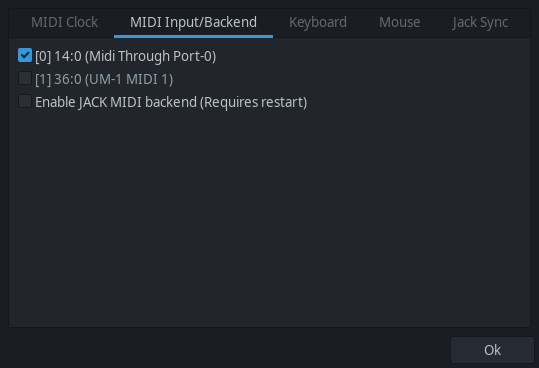

Use the MIDI bus table to set which bus(es) can send MIDI start, stop and song position and the method to use. See tooltips for additional information.
MIDI Input / Backend
Check MIDI in to allow incoming MIDI to be recorded.
Check Enable JACK MIDI backend to use JACK MIDI instead of ALSA.
Keyboard

Change default keybindings for supported actions.
Show key labels on sequences: will display the key mapped to the boxes on the [3] Main Window
at the bottom right of the box.
For any item, select the item with left mouse, then press a keyboard key to change the key binding.
Mouse
Select mouse input type (SEQ32 vs Fruity).
Jack Sync
Jack Transport: sets sync to JACK transport. Check if you want sync.
Transport Master: make seq32 become transport master.
Master Conditional: make seq32 become transport master only if no other master is already set.
[manual-alsa-ports]
If the [7] User Configuration File (.seq42rc) entry for [manual-alsa-ports] is
set to 0 then the MIDI Clock and MIDI Input will show any available ALSA ports for connection.
This setting will not create any visible ports that can be seen by JACK graph for connection.
The setting does not apply if [midi-backend] is set to 1 for JACK backend.
MIDI Clock

Use the listed bus table to set which bus(es) can send MIDI start, stop and song position and the method to use. See tooltips for additional information.
MIDI Input / Backend

Check the listed ALSA ports to allow incoming MIDI to be recorded.
Check Enable JACK MIDI backend to use JACK MIDI instead of ALSA.